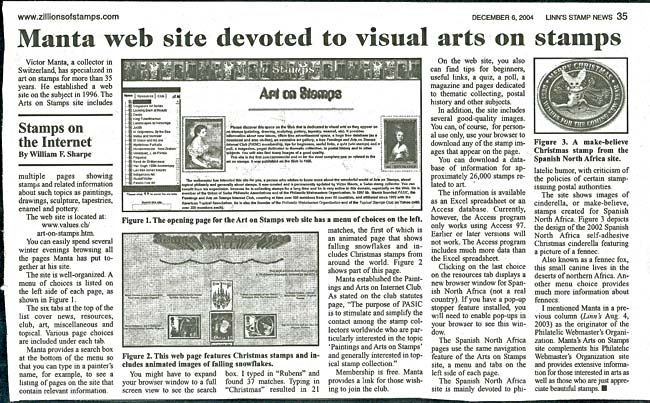

|
Special Edition, January 2005 In December 2004 the prestigious philatelic magazine LINN'S has published on a half of a page an article about the Art on Stamps site. We have got a copy of the article (without the accompanying images) from its author, Bill Sharpe, who writes for many years about the philately on the Internet for this respectable publication. Thanks a lot' Bill! "Victor Manta is a Swiss collector who has specialized in art on stamps for over 35 years. His web site, Arts on Stamps, at http://www.values.ch/art-on-stamps.htm, which he established in 1996, includes multiple pages showing stamps and related information about such topics as paintings, drawings, sculpture, tapestries, enamel, and pottery. You can easily spend several winter evenings browsing all the pages Manta has put together at his site. The site is extremely well-organized. A menu of choices is listed on the left side of each page (see Figure 1). There are six tabs available – news, resources, club, art, miscellaneous, and topical – with each tab showing multiple page choices. Manta provides a search box at the bottom of the menu so that you can type in a painter’s name, for example, to see a listing of pages at the site that show relevant information. You may have to expand your browser window to a full screen view to see the search box. I typed in “Rubens” and found 37 matches. Typing “Christmas” resulted in 21 matches, the first of which is an animated Christmas tree, partially shown in Figure 2. The actual page is animated with snowflakes falling. Manta has established a club, Paintings and Arts on Internet Club (PASIC), for those collectors. As stated on the club statutes page, “The purpose of PASIC is to stimulate and simplify the contact among the stamp collectors worldwide who are particularly interested in the topic ‘Paintings and Arts on Stamps’ and generally interested in topical stamp collection.” Membership is free. Manta provides a link for those wishing to join the club. You can also find tips for beginners, useful links, a quiz, a poll, a magazine, and pages dedicated to thematic collection, to postal history and to other subjects. You will also find many images of a good quality. You can, of course, use your browser to download any of the stamp images that appear on the page for personal use only.
 You can download a database of information for approximately 26,000 stamps related to art. The information is available as an Excel spreadsheet or an Access database. The Access program, though, only works using Access 97 at this time. Earlier or later versions will not work. The Access program includes much more data than the Excel spreadsheet. Clicking on the last choice on the Arts on Stamps menu resources tab displays a new browser window for Spanish North Africa (SNA). If you have a pop-up stopper feature installed, you will need to enable pop-ups in your browser to see this window. The SNA pages use the same navigation feature of the Arts on Stamps site with a menu and tabs on the left side of each page. SNA is mainly devoted to philatelic humor, with some criticism of the policies of certain stamp-issuing postal authorities. Click on the third tab at this site to learn details about the origin of SNA. Figure 3 shows the design of the 2002 SNA Christmas issue, including a picture of a fennec. You can find more information than you really need to know about fennecs from another menu choice on this tab. I mentioned Manta in a previous column (Linn’s August 4, 2003) as the originator of the Philatelic Webmaster’s Organization. Manta’s Arts on Stamps site complements his PWO site and provides extensive information for those interested in arts as well as those who are just appreciate beautiful stamps." In the April 2001 issue of the prestigious Linn's philatelic magazine, William Sharpe wrote: As I pointed out in a previous article in Linn’s in August 1999, the term newsgroups is a misnomer (for the news:rec.collecting.stamps.discuss V.M.). There’s little news there, mainly opinions expressed by posters who comment on various aspects of our hobby. The first subject that caught my eye was titled "Russian Easter Eggs." Victor Manta’s message pointed out that Liechtenstein issued a set of stamps in March showing Easter eggs from Russia. You can see pictures of the several stamps and an enlargement of the detailed Easter Egg design at http://values.ch/Countries/Liechtenstein/Easter/easter.htm. Eventually take also a look at what was written earlier about this site, in the Glassine Surfer, a publication of the American Philatelic Society. We encourage all stamps collectors interested in Art on Stamps to join us at the Paintings and Arts on Stamps Internet Club, in order to make our hobby even more interesting and joyful for you and for all of us. To join this free club, please click on the button below:
|

| Published:
01/09/05. Revised:
12/04/08. All rights reserved worldwide. |